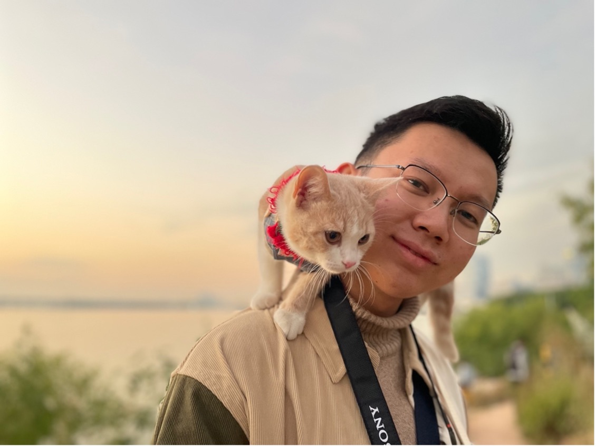
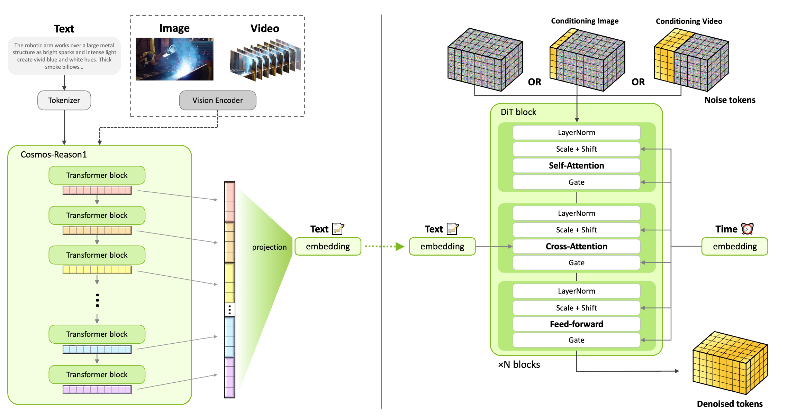
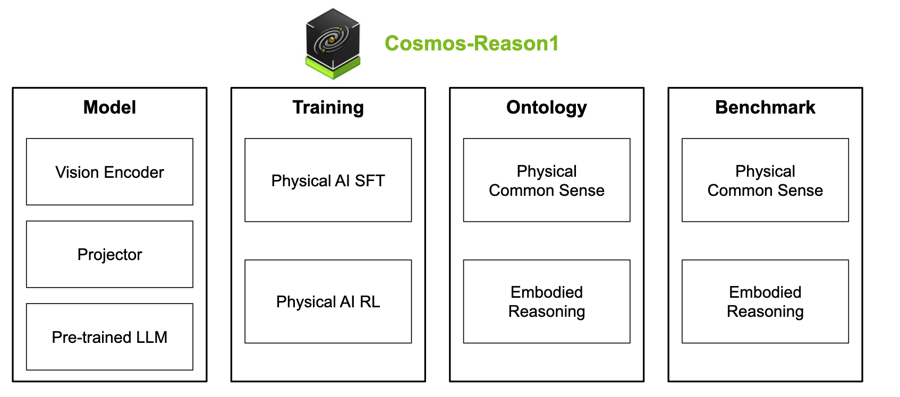
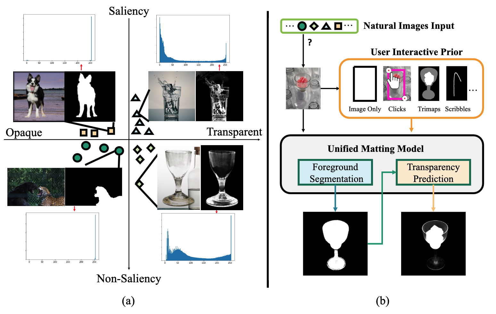
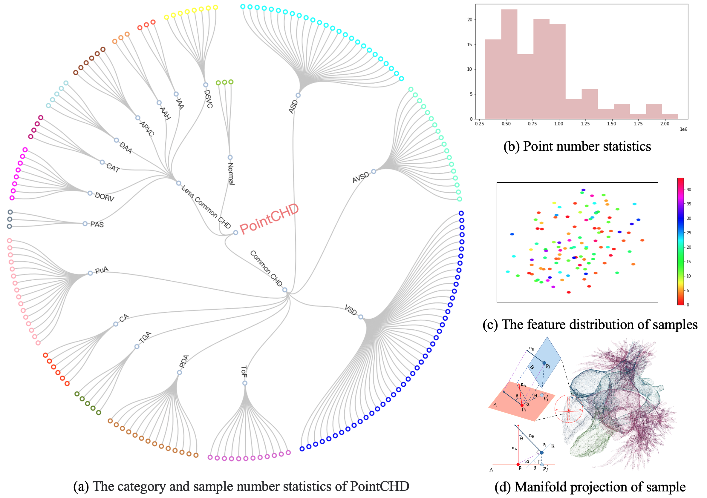
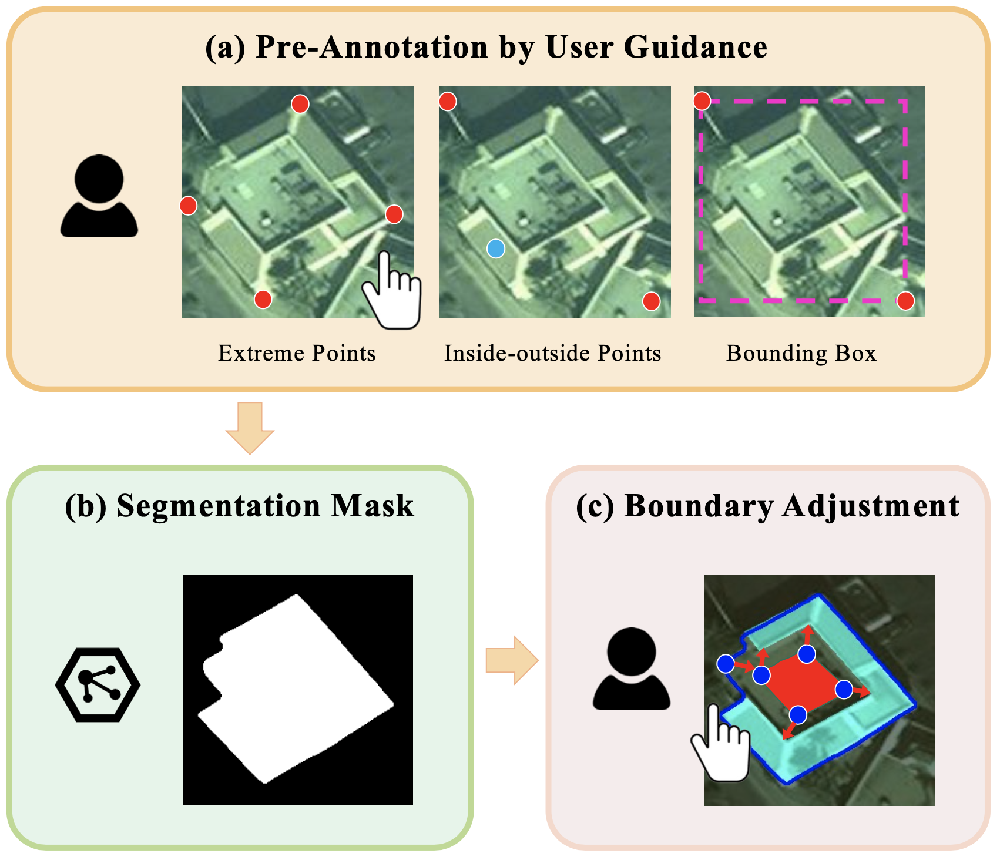
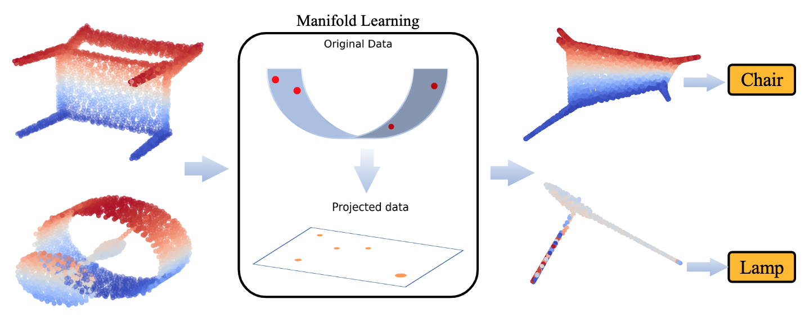
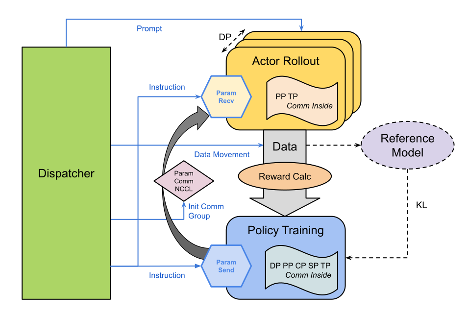
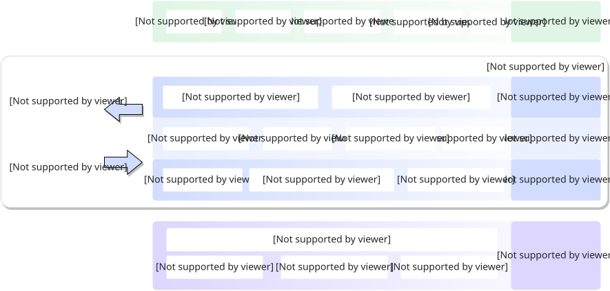
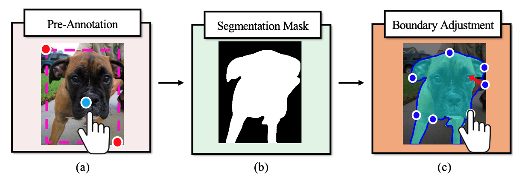

Dinghao YANG 杨丁豪Senior System Engineer, NVIDIATraining infrastructure for Physical AIHangzhou, China Email: dinghaoy@nvidia.com; dinghowyang@gmail.com; Google Scholar: Google Scholar Link Github: https://github.com/Dinghow Personal Blog: https://dinghow.site/dinghow-blog |
 |
Biography
I am a senior system engineer at NVIDIA, currently leading the infrastructure for the Diffusion RL stack within Cosmos-RL — a unified RL framework for foundation models spanning LLM, VLM, Diffusion, and VLA. I'm lucky to work with Jiaxin Cao, Junjie Bai and many other talented geeks. Before NVIDIA, I worked at Lepton AI (acquired by NVIDIA in 2025), where I contributed to the development of Lepton's LLM inference engine. Earlier, I was a core developer of BladeLLM — the inference engine of Alibaba Cloud's Machine Learning Platform for AI powering the Qwen series.
I received the M.S degree from the School of Electronic and Computer Engineering, Peking University, in 2023, and the B.E. degree from the School of Software Engineering, Tongji University, in 2020.
My interests include GenAI Infra, 3D Vision, Physical AI, and World Foundation Model.
Experience
- Apr.2025 - Now, Senior System Engineer (Training Infrastructure for Physical AI), NVIDIA
- Jun.2024 - Apr.2025, Research Engineer (LLM Inference & Training Optimization), Lepton AI
- Jul.2023 - May.2024, Algorithm Engineer (LLM Inference Optimization), Alibaba Cloud
- Oct.2020 - Jan.2022, Research Intern (Computer Vision), SenseTime Research
- Oct.2019 - Jul.2020, Research Intern (3D Vision), Peng Cheng Lab
- Sep.2019 - Sep.2019, Research Intern (3D Vision), Megvii Research
Publications
Preprint Papers
 |
World Simulation With Video Foundation Models for Physical AI
NVIDIA (I am a core contributor for the Diffusion RL training framework) [PDF] [Code] |
 |
Cosmos-reason1: From physical common sense to embodied reasoning
NVIDIA (I am a core contributor for the SFT & RL training framework) [PDF] [Code] |
Published Papers
 |
Unified Interactive Image Matting
Dinghao Yang, Bin Wang, Weijia Li, Yiqi Lin, Conghui He ACM Transactions on Multimedia Computing, Communications and Applications (TOMM), 2025 [PDF] [Code] |
 |
PointCHD: A Point Cloud Benchmark for Congenital Heart Disease Classification and Segmentation
Dinghao Yang, Wei Gao IEEE Journal Of Biomedical & Health Informatics (JBHI), 2024 [PDF] [Code] |
 |
Exploring the User Guidance for More Accurate Building Segmentation from High-Resolution Remote Sensing Images
Dinghao Yang, Bin Wang, Conghui He, Weijia Li International Journal of Applied Earth Observation and Geoinformation (JAG), 2024 [PDF] [Code] |
 |
Exploiting Manifold Feature Representation for Efficient Classification of 3D Point Clouds
Dinghao Yang, Wei Gao, Ge Li, Hui Yuan, Junhui Hou, Sam Kwong ACM Transactions on Multimedia Computing, Communications and Applications (TOMM), 2023 [PDF] [Code] |
Projects
 |
Cosmos-RL
Cosmos-RL is a scalable Reinforcement Learning framework for foundation models, currently the only open-source RL framework that unifies LLM, VLM, Diffusion, and VLA training under a single abstraction. I lead the infrastructure for the WFM (Diffusion-based World Foundation Model) RL stack, covering training pipeline design and distributed system integration. [Code] |
 |
Lepton Inference Engine
The LLM inference engine developed at Lepton AI (acquired by NVIDIA in 2025). I contributed to model implementation (LLM, low-latency TTS), performance optimization by CUDA kernels, and serving-side performance work. [Lepton AI] |
 |
BladeLLM (Qwen Inference Engine)
BladeLLM is the production inference engine for the Qwen series at Alibaba Cloud. As a core developer, I owned model implementations, serving-side performance work, engine interface development, and Triton kernel optimizations. [Introduction] |
 |
Intelligent Annotation for SenseBee
I am principally responsible for the interactive data annotation algorithms for SenseBee, the data platform for SenseTime AI research. We propose and deploy deep learning-based algorithms to accelerate manual data annotations (i.e. image segmentation, image matting, 3D object detection). [Code] |
| OpenPointCloud
I participate in OpenPointCloud, an open-source algorithm library of deep learning-based point cloud compression & processing, mainly contrbute in the manifold learning-based point cloud representation learning method. [Code] |
Awards
- Award for Scientific Research, Peking University. 2022.
- 2nd place at Streaming Detection Challenge, Full Stack Track! (CVPR 2021 Workshop)
- Excellent graduate of Shanghai. 2020.
- Shanghai Scholarship. 2019.
- Excellent Leader of Microsoft Student Club, MSRA. 2018.
Academic Activities
- Journal reviewer: TCSVT
- Conference reviewer: ACM MM 2022, CVPR 2022/2026, ECCV 2022, ICCVM 2023, ICDIP 2022, IJCAI 2022